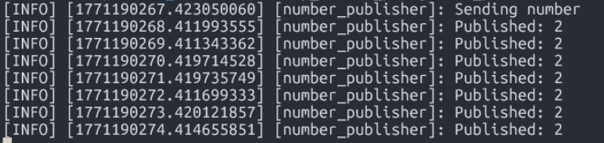
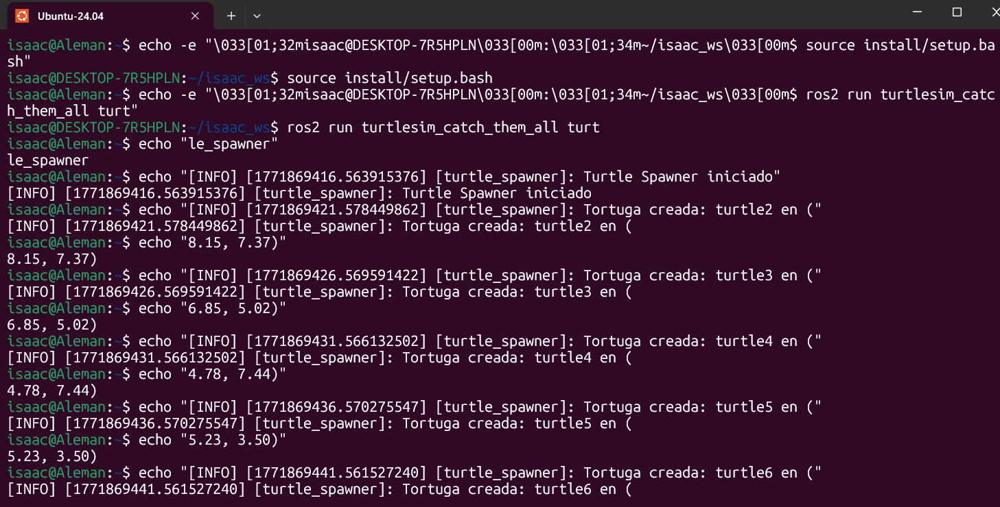

activity – ROS2 Custom service
- Proyecto: Custom service ROS2
-
Team: Isaac Antonio Pérez Alemán & Carlos Galicia
-
Fecha: 19/02/2026
1. Activity Goals
-This work designs a distributed ROS 2 system that emulates the behavior of a battery and its interaction with an LED panel, using communication mechanisms based on services and topics.
System Composition:
- The setup consists of two primary nodes.
2. Materials
- No materials required
3. Analysis

 Node (Client)
Node (Client)
Description:
This node models the battery level of the system. The battery begins fully charged at 100%, gradually discharges until it reaches 0%, then switches to charging mode and recharges back to 100%. This cycle repeats continuously. A timer is used to periodically update the battery status.
Behavior:
- At 0% → sends a request to the server to switch the LED on
- At 100% → sends a request to the server to switch the LED off
- Operates as a service client (SetLed).
Additional Feature:
The node also subscribes to the HecStatus topic to track the LED’s actual state and print it to the terminal, ensuring proper synchronization with the server.
Panel LED Node (Server)
Description:
This node functions as the controller for the LED hardware.
Responsibilities:
- Preserve the current LED status (e.g., [0,0,0] or [0,0,1])
- Continuously broadcast that status on the HecStatus topic
- Handle incoming requests through the SetLed service
- Update the LED state according to the boolean value provided in the request
- The server does not manage battery logic; it simply executes the commands issued by the client
Code Explanation: Battery Node
In this implementation, both custom services and message types are required.
- Services are used to send requests, such as controlling the LED state.
- Messages are employed to deliver constant updates, ensuring the battery level is communicated periodically.
Code
code 1
import rclpy
from rclpy.node import Node
from isaac_interfaces.msg import LedPanel
from isaac_interfaces.srv import Setled
Imports and Package Structure
In this project, we rely on elements from the isaac_interfaces package, which contains two key folders:
- srv → defines the service interfaces
- msg → defines the message types
Service Details:
- The service handles battery-related operations.
- It includes the request for charging and the response field, which in this case is represented by success.
Code
-It is used to communicate the LED’s status between nodes, ensuring consistency across the system.-A client component, which interacts with the service to send requests.

`` class BatteryClient(Node):
def __init__(self):
super().__init__("battery_client")
self.client = self.create_client(Setled, "Setled")
while not self.client.wait_for_service(timeout_sec=1.0):
self.get_logger().info("Waiting for service 'set_led'...")
self.charging = False
self.battery_level = 100.0 # empieza bajo para prueba rápida
self.current_led = [0, 0, 0]
self.timer = self.create_timer(0.1, self.update_battery)
self.subscriber = self.create_subscription(LedPanel, "HecStatus",self.led_callback,10)
def led_callback(self, msg):
self.current_led = msg.led
```
- When the level reaches 0%, a request is sent to activate the LED.
- Additional logic is included to handle future responses and prevent potential errors.
``` def update_battery(self):
if self.charging:
self.battery_level += 1.0
else:
self.battery_level -= 1.0
self.get_logger().info(f"Battery: {self.battery_level} {self.current_led}")
if self.battery_level <= 0.0:
self.battery_level = 0.0
self.charging = True
self.send_request(True)
if self.battery_level >= 100.0:
self.battery_level = 100.0
self.charging = False
self.send_request(False)
def send_request(self, state):
request = Setled.Request()
request.battery_level = self.battery_level
request.request = state
future = self.client.call_async(request)
future.add_done_callback(self.response_callback)
def response_callback(self, future):
response = future.result()
if response.success:
self.get_logger().info("charging battery.")
CODE
``` import rclpy from rclpy.node import Node from hector_interfaces.msg import LedPanel from hector_interfaces.srv import Setled
class BatteryClient(Node):
def init(self): super().init("battery_client")
self.client = self.create_client(Setled, "Setled")
while not self.client.wait_for_service(timeout_sec=1.0):
self.get_logger().info("Waiting for service 'set_led'...")
self.charging = False
self.battery_level = 100.0
self.current_led = [0, 0, 0]
self.timer = self.create_timer(0.1, self.update_battery)
self.subscriber = self.create_subscription(LedPanel, "ISAACStatus",self.led_callback,10)
def led_callback(self, msg): self.current_led = msg.led
def update_battery(self):
if self.charging:
self.battery_level += 1.0
else:
self.battery_level -= 1.0
self.get_logger().info(f"Battery: {self.battery_level} {self.current_led}")
if self.battery_level <= 0.0:
self.battery_level = 0.0
self.charging = True
self.send_request(True)
if self.battery_level >= 100.0:
self.battery_level = 100.0
self.charging = False
self.send_request(False)
def send_request(self, state):
request = Setled.Request()
request.battery_level = self.battery_level
request.request = state
future = self.client.call_async(request)
future.add_done_callback(self.response_callback)
def response_callback(self, future):
response = future.result()
if response.success:
self.get_logger().info("charging battery.")
def main(args=None): rclpy.init(args=args) node = BatteryClient() rclpy.spin(node) rclpy.shutdown()
if name == "main": main() ```
LED Panel Node
- The central aspect of this implementation is the creation of the service interface.
- It also defines a publisher that broadcasts the current LED state to the appropriate topic.
``` class RobotstatusPublisher(Node):
def __init__(self):
super().__init__('Led_panel_node') #MODIFY NAME
self.walle = self.create_publisher(LedPanel, "HecStatus", 10)
self.led = [0, 0, 0]
self.timer = self.create_timer(0.1, self.publish_led)
self.server_= self.create_service(Setled, #Service TYPE
"Setled", #service Name
self.add_two_ints_callback
)
self.get_logger().info("Service Server")
def publish_led(self):
msg = LedPanel()
msg.led = self.led
self.walle.publish(msg)
def add_two_ints_callback(self, request: Setled.Request, response: Setled.Response):
if request.request:
self.get_logger().info(
f"Battery reached {request.battery_level}"
)
self.led = [0, 0, 1]
response.success = True
else:
response.success = False
self.led = [0, 0, 0]
return response
```
code
``` ##!/usr/bin/env python3
import rclpy from rclpy.node import Node from hector_interfaces.srv import Setled from hector_interfaces.msg import LedPanel
class RobotstatusPublisher(Node):
def __init__(self):
super().__init__('Led_panel_node')
self.walle = self.create_publisher(LedPanel, "ISAACStatus", 10)
self.led = [0, 0, 0]
self.timer = self.create_timer(0.1, self.publish_led)
self.server_= self.create_service(Setled, #Service TYPE
"Setled", #service Name
self.add_two_ints_callback
)
self.get_logger().info("Service Server")
def publish_led(self):
msg = LedPanel()
msg.led = self.led
self.walle.publish(msg)
def add_two_ints_callback(self, request: Setled.Request, response: Setled.Response):
if request.request:
self.get_logger().info(
f"Battery reached {request.battery_level}"
)
self.led = [0, 0, 1]
response.success = True
else:
response.success = False
self.led = [0, 0, 0]
return response
def main(args=None): rclpy.init(args=args) Node = RobotstatusPublisher() rclpy.spin(Node) rclpy.shutdown()
if name == "main": main() ```
## RESULTS
-Battery in Normal Operation

-Battery in Charging Mode